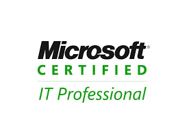
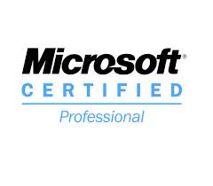
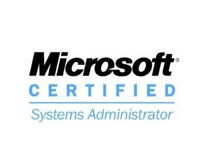
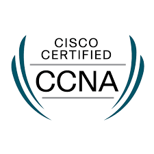
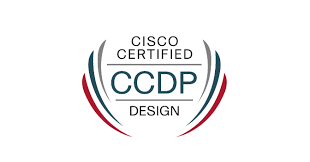
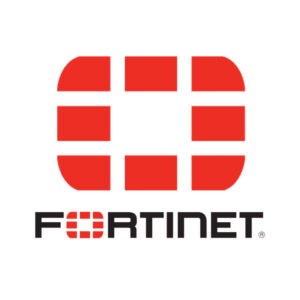
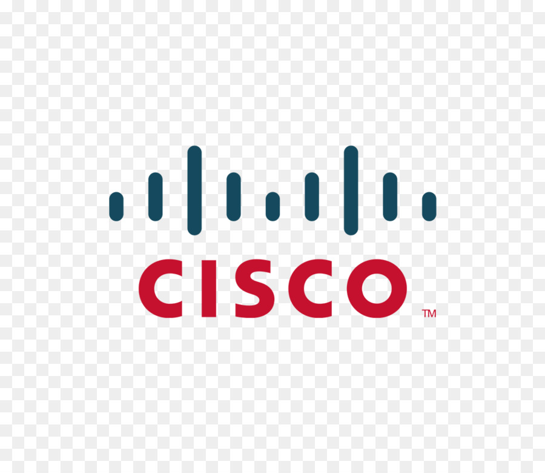

Zahid Mehmood


Commercial, Building# 722,
Flat# G02, Sharjah UAE.
Education
BACHELOR’S DEGREE in Computer Sciences
UNIVERSITY OF THE PUNJAB – LAHORE (PAK)
Experties
Certificaitons
    
Skills
 
Strategic, client-focused Senior Information Technology Manager with 20 years of success in designing, developing, implementing,
and supporting software, hardware, and networking solutions internationally.
Built cost-effective and well-designed solutionsto ensure optimal system performance across multi-million-dollar company growth.
Commended for the ability to transcend barriers between technology, creativity, and business, by aligning and engaging quickly with upper
management and developers.
IT Infrastructure Specialist

IT Manager
Sharjah Publishing City Free Zone(Sharjah - UAE)
July 2022 - Till now
A subsidiary of Sharjah Book Authority, is the ultimate destination for entrepreneurs and
investors seeking to establish their business in the UAE.
Responsible for IT plans, set and monitor departmental goals, establish team workflows, choose
technology to invest in, and facilitate collaboration across the organization.
Essential Job Duties and Responsibilities:
- Own projects, solutions, and key responsibilities within a larger business initiative.
- Enable faster and smarter business processes and implement analytics for meaningful insights.
- lead remediation efforts for gaps in security and networking
- Migrate legacy servers/applications to modern solutions.
- Handle business-critical IT tasks and systems administration.
- Nurture dependable IT infrastructure and networking that's always up and running.
- Partner with internal and external partners to communicate project status, activities, and achievements.
- Track and maintain hardware and software inventory.
- Documents internal processes and procedures related to duties and responsibilities.
- Perform server administration tasks, including user/group administration, security permissions.
Delivered Main Projects:
Migration Office 365 Tenant:
- Migrate 150 Users from tenant (creativezone.com) to tenant (spcfz.ae) along with Onedrive data for each user.
- Create Microsoft Azure Active Directory for tenant (spcfz.ae) and apply all policies and procedures.
- Microsoft Intune setup and configuration for tenant (spcfz.ae) for mobile device management.
- Implement Perception Point dynamically scan 100% of email traffic including embedded files & URLs regardless of the volume.
- Sophos Central provides unmatched protection for endpoint, server, mobile.
- Implementation Vicarius vulnerability remediation platform to protect company assets against software exploitation. Consolidating vulnerability assessment, prioritization, and remediation, Vicarius strengthens cyber hygiene and proactively reduces risk.
- Implement Acronis cyber protection that delivers integrated backup of Office 365 exchange and One-Drive.
- Implement Zscaler to strengthen the enterprise’s digital transformation security posture and productivity with a zero trust architecture.
- Implement iZOOlogic brand protection Identification and response to a variety of Trademark and brand infringement.
- Implement BluSapphire to Integrate all above platforms and use them as one integrated function in our business.
- Provide a platform to all users to enhance cyber security awareness and training.
- Get certified ISO 27001:2022 (Information Security).
360 Cyber Security Project Implementation:
Company IT Infrastructure Specialist
Saudi Readymix Concrete Co.
Al-Khobar Kingdom of Saudi Arabia
Feb 2000 - Aug 2021
The leading producer and supplier of ready-mixed concrete and related products in Saudi Arabia
Essential Job Duties and Responsibilities:- Responsible to manage company Local & Wide Area Network.
- Redpondiblr to manage company data center in Head Office.
- lead remediation efforts for gaps in security and networking
- Migrate legacy servers/applications to modern solutions.
- Handle business-critical IT tasks and systems administration.
- Nurture dependable IT infrastructure and networking that's always up and running.
- Perform server administration tasks, including user/group administration, security permissions.
Managing Servers, Backups and VMWare:
- Administration of all Windows Servers 2016/2019 (windows updates, patches, system logs, error logs and performance issues).
- Managing the backups for all physical servers and VM's through Microsoft Data Protection Manager(DPM). Troubleshooting and resolving VMware environment issues. Providing technical support and documenting VMware processes.
- Responsible for managing and maintaining security for VMware Infrastructure (ESXi 6.7). Execute essential processes, services and agents and virtual machines backups. Responsible for monitoring health and performance for all available IT Services in Microsoft Servers through System Center Operation Manager (SCOM).
- Manage deployment and security of IT devices and applications through System Center Configuration Managers (SCCM) . Microsoft Azure & Office 365
- Lead the team to create, test and manage backup and disaster recovery solutions over Microsoft Azure that’s simple, secure, scalable, cost-effective and integrated with on-premises data protection solutions.
- Install, configure and manage Active Directory Federation Server(ADFS) for Azure and Office 365 single sign on authentication.
- Responsible for managing 500+ active directory users over Office 365 with E3 License capabilities included. Protect information with message encryption, rights management, and data loss prevention for email and files. Networks & Security
- Responsible for managing the company network infrastructures (Switches & Routers). Manage VLANS and Routing Protocols for all Switches and Routers in the Head Office Data Center.
- Deploy Fortinet Firewall in the Head Office and all remote sites. And having VPN Connectivity between Onsite Data Center and Amazon Web Services.
- Design and Implement a project to connect all Remote 47 Sites with Head Office with latest SDWAN Technology by SOPHOS Firewall (XG300 & RED 60 Devices) on each site.